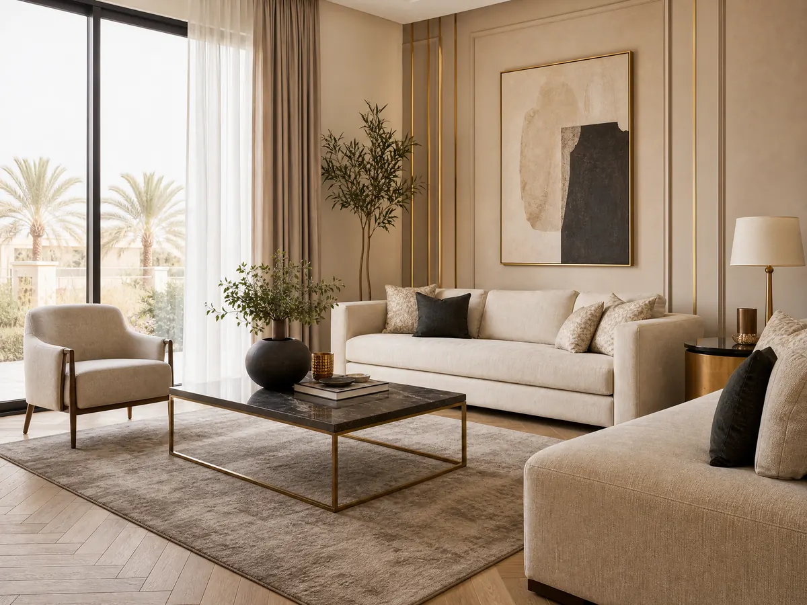

معلم بروفايل الرياض
معلم بروفايل الرياض
معلم بروفايل الرياض يقدم خدمات احترافية في دهانات البروفايل الداخلي والخارجي باستخدام أفضل الخامات، مع ضمان جودة عالية، دقة في العمل، ومظهر جمالي يدوم طويلًا
تُعد أعمال البروفايل من أهم عناصر التشطيب الحديثة التي تضيف لمسة جمالية فريدة للمنازل والفلل، حيث تجمع بين المتانة والشكل العصري، ومع التطور في عالم الدهانات، أصبح الاعتماد على معلم بروفايل الرياض ضرورة للحصول على نتائج احترافية تدوم لسنوات طويلة دون تأثر بالعوامل الجوية.
عند اختيار الجهة المناسبة لتنفيذ دهان البروفايل، يبرز اسم شركة ديكورات الأحلام كأحد أبرز مقدمي هذه الخدمات في الرياض، حيث توفر خبرة واسعة، وخامات عالية الجودة، وفريق عمل متخصص يضمن تنفيذ أدق التفاصيل بأعلى مستوى من الاحترافية والدقة.
معلم بروفايل الرياض
يعتبر معلم بروفايل الرياض في شركة ديكورات الأحلام من العناصر الأساسية في نجاح أعمال التشطيب، حيث يعتمد عليه في تنفيذ التصميمات الحديثة التي تضيف قيمة جمالية وعملية للمكان، سواء كان داخليًا أو خارجيًا، مع ضمان الجودة والمتانة:
تنفيذ جميع أنواع دهانات البروفايل الحديثة.
استخدام خامات مقاومة للعوامل الجوية.
تقديم استشارات فنية قبل التنفيذ.
الالتزام بالدقة في المواعيد.
توفير تصميمات تناسب جميع الأذواق.
يعتمد معلم بروفايل الرياض في شركة ديكورات الأحلام على خبرته في اختيار النوع المناسب من البروفايل حسب طبيعة الجدران، مما يضمن نتائج مميزة تدوم لفترات طويلة دون الحاجة إلى صيانة متكررة.
دهان بروفايل خارجي جوتن
يُعد دهان بروفايل خارجي جوتن من أفضل الخيارات المستخدمة في الواجهات، حيث يجمع بين الجودة العالية والمظهر الجذاب، كما يوفر حماية قوية للجدران ضد الحرارة والرطوبة والأمطار:
مقاومة عالية للتقلبات الجوية.
ألوان ثابتة لا تتغير مع الوقت.
حماية من التشققات والتآكل.
مناسب للفلل والمباني الحديثة.
سهولة التنظيف والصيانة.
يعتمد معلم بروفايل الرياض على دهانات جوتن لما تتميز به من جودة عالمية، مما يجعلها الخيار المثالي لمن يبحث عن تشطيب راقٍ يدوم لسنوات دون تأثر بالعوامل الخارجية.
اقرأ أيضًا: معلم دهانات شمال الرياض: خبرة في أرقى الديكورات | +966 53 116 9312
بوية بروفايل خارجي
تُستخدم بوية بروفايل خارجي لإضفاء مظهر فاخر على واجهات المباني، حيث تتميز بقدرتها على تحمل الظروف المناخية المختلفة، بالإضافة إلى تنوع أشكالها وأنماطها التي تناسب مختلف التصاميم المعمارية:
مقاومة للرطوبة والأمطار.
تتحمل درجات الحرارة العالية.
تضيف مظهرًا عصريًا للمباني.
تتوفر بألوان متعددة.
تحمي الجدران من التلف.
يحرص معلم بروفايل الرياض على تطبيق البروفايل الخارجي بطريقة احترافية تضمن توزيعًا متساويًا للخامة، مما يمنح الجدران مظهرًا أنيقًا ومتناسقًا يعكس جودة العمل.
بوية بروفايل داخلي
تُعتبر بوية بروفايل داخلي خيارًا مثاليًا لتزيين الجدران داخل المنازل، حيث تضيف لمسة جمالية مميزة وتمنح المساحات طابعًا فريدًا يعكس الذوق الشخصي لأصحاب المكان:
تعزز جمال الديكور الداخلي.
تتناسب مع مختلف أنماط التصميم.
تضفي عمقًا بصريًا للجدران.
سهلة الدمج مع الإضاءة.
متوفرة بتصاميم عصرية متنوعة.
يقوم معلم بروفايل الرياض في شركة ديكورات الأحلام بتنفيذ البروفايل الداخلي بدقة عالية، مع مراعاة توزيع الإضاءة والألوان للحصول على أفضل نتيجة ممكنة تعكس جمال المكان وأناقة التصميم.
دهانات بروفايل شمال الرياض
تتميز خدمات دهانات بروفايل شمال الرياض بتوفير حلول متكاملة تناسب احتياجات العملاء، حيث يتم تنفيذ الأعمال باستخدام أحدث التقنيات وأفضل الخامات لضمان الجودة العالية:
خدمة سريعة في جميع أحياء شمال الرياض.
فريق متخصص ذو خبرة طويلة.
أسعار تنافسية تناسب الجميع.
استخدام معدات حديثة في التنفيذ.
ضمان على جودة العمل.
توفر شركة ديكورات الأحلام خدمات معلم بروفايل الرياض في شمال الرياض بكفاءة عالية، مع الالتزام بتقديم أفضل النتائج التي تلبي توقعات العملاء وتفوقها.
اطلع على: أفضل معلم دهانات وديكورات بالرياض | +966 53 116 9312
مميزات دهان البروفايل مقارنة بالدهانات التقليدية
يتميز دهان البروفايل بخصائص فريدة تجعله يتفوق على الدهانات التقليدية من حيث الشكل والمتانة، حيث يمنح الجدران ملمسًا مميزًا ومظهرًا عصريًا يدوم لفترات طويلة دون الحاجة إلى صيانة مستمرة أو إعادة طلاء متكررة، وهذا ما تحرص عليه شركة ديكورات الأحلام في تنفيذ وتصميم الديكور:
مقاومة عالية للعوامل الجوية المختلفة.
يمنح الجدران مظهرًا ثلاثي الأبعاد جذاب.
عمر افتراضي أطول مقارنة بالدهانات العادية.
يقلل من ظهور العيوب والشقوق.
مناسب للواجهات الداخلية والخارجية.
خطوات تنفيذ دهانات البروفايل باحترافية
يتطلب تنفيذ دهانات البروفايل اتباع خطوات دقيقة ومدروسة لضمان الحصول على أفضل نتيجة ممكنة، حيث تعتمد جودة العمل على التحضير الجيد للجدران واستخدام الأدوات المناسبة لكل مرحلة من مراحل التنفيذ:
تنظيف الجدران وإزالة الأتربة والشوائب.
معالجة التشققات والعيوب السطحية.
تطبيق طبقة الأساس (البرايمر).
توزيع مادة البروفايل بشكل متساوٍ.
تركه ليجف ثم إضافة الطبقة النهائية.
أفضل الألوان المستخدمة في البروفايل الحديث
توضح شركة ديكورات الأحلام أن اختيار الألوان المناسبة في دهانات البروفايل يلعب دورًا مهمًا في إبراز جمال التصميم، حيث تساعد الألوان المتناسقة في خلق بيئة مريحة وجذابة تتماشى مع الطابع العام للمكان وتعكس الذوق الشخصي:
الألوان الترابية الهادئة للمنازل العصرية.
الأبيض والبيج لإحساس بالاتساع والنظافة.
الرمادي بدرجاته لإطلالة حديثة.
الألوان الداكنة لإبراز الفخامة.
الدمج بين لونين لإضافة عمق بصري.
استخدامات البروفايل في الفلل والمباني الحديثة
أصبح البروفايل من الخيارات المميزة في تشطيبات الفلل والمباني العصرية، لما يقدمه من لمسات جمالية تضيف فخامة واضحة للواجهات وتساعد على إبراز التفاصيل المعمارية بطريقة متناسقة.
وتحرص شركة ديكورات الأحلام على تنفيذ أعمال البروفايل بأساليب حديثة تتناسب مع طبيعة كل مبنى، مع الاهتمام باختيار الألوان والتصاميم المناسبة لتحقيق مظهر أنيق ومتناسق:
تزيين واجهات الفلل الخارجية: منح الواجهة مظهرًا عصريًا أكثر جاذبية.
إبراز الأعمدة والزوايا المعمارية: تعزيز التفاصيل وإظهار جمال التصميم.
استخدامه في المداخل والممرات: إضافة لمسات مميزة للمناطق البارزة.
إضافة لمسات جمالية للحدائق الخارجية: تحقيق تناغم بين المبنى والمساحات المحيطة.
تحسين الشكل العام للمبنى: رفع القيمة الجمالية وإبراز الطابع المعماري للمنشأة.
نصائح للحفاظ على دهانات البروفايل
لضمان بقاء دهانات البروفايل بحالتها المثالية لأطول فترة ممكنة، يجب اتباع بعض الإرشادات البسيطة التي تساعد في الحفاظ على مظهرها وجودتها دون الحاجة إلى صيانة مكلفة أو متكررة:
تنظيف الجدران بشكل دوري.
تجنب استخدام مواد تنظيف قوية.
إصلاح أي تلف بسيط فور ظهوره.
حماية الجدران من الصدمات.
إعادة الطلاء عند الحاجة بعد سنوات.
لماذا تختار شركة ديكورات الأحلام في دهانات البروفايل
الاعتماد على شركة ديكورات الأحلام في تنفيذ أعمال دهانات البروفايل يمنحك فرصة للحصول على تشطيبات احترافية تجمع بين الجودة والجمال، بفضل الخبرة العملية والكفاءة في تنفيذ مختلف التصاميم بدقة وعناية.
كما تحرص الشركة على اختيار الخامات المناسبة لكل مشروع، مع الاهتمام بأدق التفاصيل لضمان نتيجة متناسقة ومظهر يدوم طويلًا وذلك بفضل:
فريق عمل مدرب وذو خبرة: يمتلك مهارات متخصصة في تنفيذ البروفايل الداخلي والخارجي.
استخدام خامات عالية الجودة: اختيار مواد مناسبة تساعد على تحقيق تشطيب متين وأنيق.
تنفيذ سريع ودقيق: إنجاز الأعمال وفق خطة منظمة مع الاهتمام بالتفاصيل.
تقديم ضمان على الأعمال: الحرص على رضا العميل وجودة التنفيذ.
استشارات فنية قبل البدء بالمشروع: تحديد الخامات والتصميم الأنسب وفق طبيعة المكان واحتياجات العميل.
أيضًا يمكنكم الاستفادة من خدمات معلم بروفايل الرياض وتنفيذ مختلف أعمال الدهانات والبروفايل بجودة واحترافية، من خلال التواصل مع شركة ديكورات الأحلام للحصول على خدمة مميزة واستشارة مناسبة لاحتياجاتكم عبر الرقم 0531169312.
الخاتمة
في النهاية، يعد اختيار معلم بروفايل الرياض خطوة أساسية للحصول على تشطيبات عالية الجودة تجمع بين الجمال والمتانة، ومع شركة ديكورات الأحلام يمكنك ضمان تنفيذ احترافي باستخدام أفضل الخامات، مما يمنح منزلك مظهرًا راقيًا يدوم طويلًا.
الأسئلة الشائعة
ما هو أفضل نوع بروفايل للجدران الخارجية؟
يُعد البروفايل المقاوم للعوامل الجوية خيارًا مناسبًا للواجهات الخارجية، خاصة عند استخدام دهانات جوتن، لما توفره من حماية جيدة ومظهر أنيق يحافظ على جاذبيته وجودته لفترة طويلة.
هل يمكن استخدام البروفايل داخل المنزل؟
نعم، يمكن تطبيق بوية البروفايل داخليًا لمنح الجدران مظهرًا أنيقًا ومميزًا، خاصة في الصالات وغرف المعيشة، مع إمكانية اختيار الألوان والتصاميم بما يتناسب مع الأثاث والديكور الداخلي للمكان.
كم يستغرق تنفيذ أعمال البروفايل؟
تختلف مدة تنفيذ البروفايل وفق مساحة المكان وحجم العمل والتصميم المختار، إلا أن معلم بروفايل الرياض يستطيع غالبًا إنجاز المشروع خلال وقت مناسب، مع الالتزام بالدقة وجودة التشطيب النهائي.
فيما يلي إجابات مختصرة عن أكثر الأسئلة شيوعًا حول هذا الموضوع، مع إمكانية التواصل للحصول على تفاصيل تناسب مشروعك.
هل تبحث عن تنفيذ احترافي لمشروعك؟
نحن في ديكورات الأحلام نوفر لك أفضل الخامات وأمهر الفنيين في الرياض.
تواصل معنا عبر واتساب